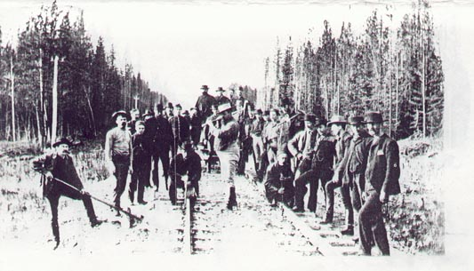

|
Whose Railroad is it? By Ed Griffin 2nd Prize StoryTeller Magazine, Summer 1996
"All right, men. Get your bloody asses out of bed." John A. O'Brien’s voice boomed though the cramped sleeping quarters of a three level crew car on a siding near Donald, British Columbia, at 4:30 on the morning of 7 November 1885. "Come on, come on. The train will be here any minute. This is the day they drive the last spike in O'Brien’s railroad." An empty bottle of Doctor Cy Girard's Ginger Brandy sailed past him. "It's not your bloody railroad, O'Brien," a voice called out. "Go back to bed." His friend, Whitfield Seymour, muttered at him from the next bunk, "You don't really believe they're gonna send a train for us, now do you, O'Brien?" O'Brien pulled up his pants and hooked his belt in the dark. How had he managed to gain weight while working harder than he ever had in his life? He shook Seymour's bed. Seymour was usually choleric in the mornings. "Day before yesterday Van Horne told me and he's a man of his word. He's sending a train. We're going west for the ceremony of the last spike. Now up." O’Brien raised his voice to include the rest of the men. "Up, you bloody navvies, up. 'Tis the final day of me railroad." From a dark corner of the car came another voice. "It's not your railroad, you dumb mick. It's Van Horne's railroad." That did it. OBrien stomped the floor until the car shook. "Up!" he cried. 'Tis O'Brien who hauled steel across the prairies and pounded steel in the Kicking Horse Pass. 'Tis O'Brien who dropped sweat and blood on the steel rails from Winnipeg to the Eagle Pass. O'Brien and..." his voice softened "the rest of you bloody navvies." As the men got up O'Brien rubbed the window, darkened by layers of tobacco smoke. Sure enough, he could see the two North West Mounted Police in the light of their rekindled campfire. One was drying his socks over the fire, the other, drinking coffee. O'Brien chuckled to himself, then nudged Seymour to have a look. Ever since the strike in the spring, the Mounties had watched him and Seymour and the entire crew. Seymour shook his head. "Do they think we're going to cause a strike on the very last day?" "Ahh," O'Brien muttered, "they're just doing their job." O'Brien knew Seymour hated the Mounties. He called them 'rich man's police,' and 'union busters.' But OBrien had talked to them, even though one of them had clubbed him in the spring. They were ordinary men, like himself. One was from Montreal where he himself was born, the other was an Irishman like himself. One cold night O'Brien had started a campfire with some unused timber from a bridge. He invited the two Mounties over to get warm. Seymour walked away then, but O'Brien talked to the two about their wives and O'Brien told of his wife and how he had to leave her and their four kids in Brandon for the season. O'Brien lit the lamp in the crew car and checked his watch. Nearly five. "Let's go, lads. Mr. Van Horne said there'll be a train at 5 AM for us." "And each man is to get a bag of gold," muttered Seymour as he started down the ladder to the first floor of the old wooden car. O'Brien followed him, past the surveyor's office, to the small kitchen where somebody had re-heated some coffee from the night before. O'Brien and Seymour got coffee and joined the others by the main line. O'Brien faced west, toward the trip ahead, even though he could hardly see the man next to him. Across the mighty Columbia, up the sharp valleys of the Selkirks to Roger's Pass and then a wild ride down the Illecillewaet, across the Columbia again at Revelstoke, through the Eagle Pass to Craigellachie. O'Brien sucked in the frosty morning air. The cold air burned away all uncertainty -- it was his railroad. He tapped the cold steel rail with his foot. All the way across Canada he had laid this line of steel. In the prairies the rails went off to infinity, in the mountains they rounded curve after curve. Steel. Spikes. The ring of the hammer. The massive engines creeping across the prairies and then battling these wild mountains. O'Brien pulled his watch from his pocket. "5:10, men, the train'll be here any minute." Ten minutes passed, then ten more. No train. Seymour came up next to him. "You didn't really think those rich men were going to send a train for us, did you?" It was an old argument he and Seymour had, Seymour insisting that the only thing Van Horne and the directors of the CPR were good at, was getting money for themselves from the Canadian government. Seymour focused on money. "No," O'Brien would answer, "look at the rails. That’s what's important, man, the rails. They join all of Canada and you and I did it. We brought the country together. Not George Stephen raising money in England or Donald Smith, not even Van Horne ordering supplies, but you and I, Seymour, you and I. We're the railroad builders." Another ten minutes passed. "Might as well go back to bed," Seymour said.. "Have faith, man. They'll be coming for us. They know it's our railroad." Seymour pointed to the two Mounties who stood beside the track, waiting for the train just as they were. "And that's why Mr. Van Horne has assigned the Mounted Police to us, to protect us, because we're such important people." How could he get Seymour to understand? The important thing was the steel, not the lordly commanders of this railroad.. Mystery lay in the steel, the unification of Canada, the dreams of thousands of people. The railroad was not only about a few rich men making themselves richer, though God knew Seymour was right about that. John A. MacDonald and the Tory party in Ottawa had given the CPR directors everything they asked for. The trouble was Seymour could not see beyond the money. O'Brien repeated the refrain: "It's our railroad." "It's not yours, O'Brien, and it's not mine." "It is." "You don't know anything about money." O'Brien tapped the rail with his foot. He did it gently, almost reverently. "I know about these rails. I laid them." "Then why didn't Mr. Van Horne and Mr. Smith, when they came through here in their polished mahogany car, give us a ride to the ceremony?" Seymour had him there. Van Horne had told O'Brien he couldn't afford to have the men idle for two days. Seymour pressed his advantage. "Too cheap, right. They can spend hundreds bringing Van Horne and Donald Smith here from back east in luxury, but they can't get us 107 miles." "They'll come for us." "No, they won't. Besides how would it look for the world to see two Mounties in the background of their photograph?" O'Brien looked at his watch. The ceremony was supposed to be between 9 and 10 that morning. Now it was 6 AM and no train. Unless the train crossed Roger's Pass at breakneck speed there would be no ceremony for him and his men. "I'll wire them," O'Brien said. He did and an answer came back a few minutes later, "We're checking. We'll let you know in a few minutes." O'Brien showed the message to Seymour. "See that. They know we're waiting." "And wait we will." Minutes passed. Men drifted back to the crew car. The Mounties sat in the telegraph operator's shed. O'Brien felt the November cold, even though he had not noticed it before dawn. He paced up and down, waiting for word. An hour and a half went by. Finally a telegraph came. It said simply, "Train arriving later this morning to take you EAST." "So much for your last spike ceremony, O'Brien," Seymour said when O'Brien told him. "We want to go west and they ship us east." "At least we’re going home," O'Brien said, "but I guess we won't be going to Craigellachie." Seymour was at his bitterest. "Bloody Scots, they call everything in this new land after their own heritage. Craigellachie, hell. From what I heard they ought to call the last spike 'Kwang Tung.' That’s where a lot of Chinese who worked in the Fraser Canyon came from and they spilled a lot more blood than the Scots." How could he keep his friend from bitterness? He looked west toward the Selkirks. Someplace on the other side of those mountains Van Horne and Donald Smith were getting ready to drive the last spike. When he turned around, Seymour was gone, presumably back to the crew car. He was alone. He walked west along the track, but suddenly he stopped and then ran for a wheelbarrow, a tie bar, a spike puller and a spike hammer. Alone he worked under the cold November sky, ripping up a section of rail that had shifted slightly in the mud of spring. The two Mounties sauntered over. "What are you doing, O’'Brien?" "We're after having our own ceremony." The two Mounties looked at each other, then hurried off to the telegraph shack. O'Brien shook his head. They were checking with the company. Why did the Mounties always do what the company wanted? Often it seemed Seymour was right. It wasn’t O'Brien's railroad at all. O'Brien pulled three dozen spikes. He grabbed a big hammer and pounded the ties back to their rightful place. Sweat glistened on his forehead, despite the cold day. He worked the rails back into place and drove the spikes back in, all but one. With each blow of his hammer, his essence flowed into the steel, but somehow came right back into him, full of power and might. Now his spirit was a whole country long. It didn't matter what the Mounties did -- it was his railroad. At ten AM he called the others. "Come on, men, we're going to lay the last spike in the Canadian Pacific Railroad." Everyone gathered outside. The Mounties said, "This is not official." O'Brien winked at the men standing along the track. "Right you are. 'Tis just a mud slide we're repairing." Then he passed the hammer to the nearest man. "I want each of you to take a swing on that hammer. Every man who drives steel on this railroad leaves a part of his soul in the rails. It's not a rich man's railroad. It's our railroad." One by one, the men pounded their souls into the spike, small blows each so as to leave some part of the spike for the next man. When someone was about to hand the hammer to Seymour, O'Brien stopped him. "I want Seymour to be last. It's his railroad, too." When everyone else had a turn, Seymour stood in the middle of the tracks, raised the hammer but delivered only a slight blow. He passed the hammer to O'Brien. O'Brien swung the hammer. It was then a photographer took a picture of the last spike driven on the Canadian Pacific Railroad, the North West Mounted Police observing the whole thing to make sure nobody questioned whose railroad it was. ///// The Railway Museum in Revelstoke, British Columbia, features the famous photo of Donald Smith driving the last spike in the Canadian Pacific Railroad on 7 November 1885 at Craigellachie just beyond the Eagle Pass. The museum has another photo of a group of unidentified workers who held their own ceremony the same day. The inscription below this second photo states:  A number of employees near Donald, B.C., 107 1/2 miles east of Eagle Pass, were waiting for a train to take them east on the day that the last spike was driven. To commemorate the event, they staged their own "last spike" ceremony for a photographer, whose camera recorded two North West Mounted Police officers among the spectators. The description, uninterested in the men who held this ceremony, goes on to discuss how the photo reveals the unequal tie lengths and the ballast peaking at track centre. Pierre Berton in his book The Last Spike lists the 'dignitaries' who were at the ceremony and details the complications of getting them there. He explains the presence of a young man from Victoria, B.C. who had gone east to fight Indians. He makes no mention of the workers from Donald, B.C.
|
|
© Copyright Ed Griffin 2003. All rights reserved. |